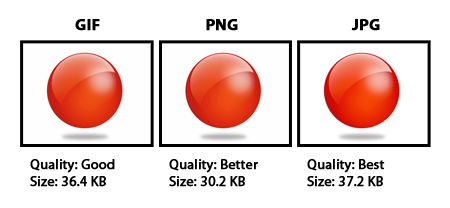
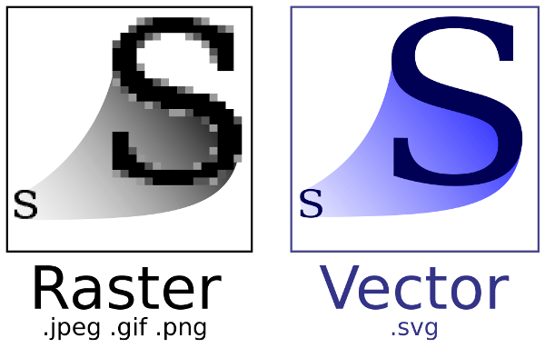

jpg: JPEG (Joint Photographic Experts Group) is an ISO/IEC group of experts that develops and maintains standards
for a suite of compression algorithms
PNG: (pronounced ping as in ping-pong; for Portable Network Graphics) is a file format for image compression that,
in time, is expected to replace the Graphics Interchange Format (GIF) that is widely used on today's Internet
GIF: GIF er et 8-bit-per-piksel bitmap-billedformat som brukes for å lagre bilder. Formatet bruker en palett med
opptil 256 forskjellige farger fra 24-bit RGB-fargerommet.
BMP: Short for "Bitmap." It can be pronounced as "bump," "B-M-P," or simply a "bitmap image." The BMP format is a
commonly used raster graphic format for saving image files. It was introduced on the Windows platform, but is now
recognized by many programs on both Macs and PCs.
The BMP format stores color data for each pixel in the image without any compression. For example, a 10x10 pixel
BMP image will include color data for 100 pixels. This method of storing image information allows for crisp,
high-quality graphics, but also produces large file sizes. The JPEG and GIF formats are also bitmaps, but use
image compression algorithms that can significantly decrease their file size. For this reason, JPEG and GIF images
are used on the Web, while BMP images are often used for printable images.
SVG: Scalable Vector Graphics (SVG) is the description of an image as an application of the Extensible Markup Language
(XML). Any program such as a Web browser that recognizes XML can display the image using the information provided in
the SVG format. Different from a raster graphicsscalable part of the term emphasizes that vector graphic images can
easily be made scalable (whereas an image specified in raster graphics is a fixed-size bitmap). Thus, the SVG format
enables the viewing of an image on a computer display of any size and resolution, whether a tiny LCD screen in a cell
phone or a large CRT display in a workstation. In addition to ease of size reduction and enlargement, SVG allows text
within images to be recognized as such, so that the text can be located by a search engine and easily translated into
other languages.

